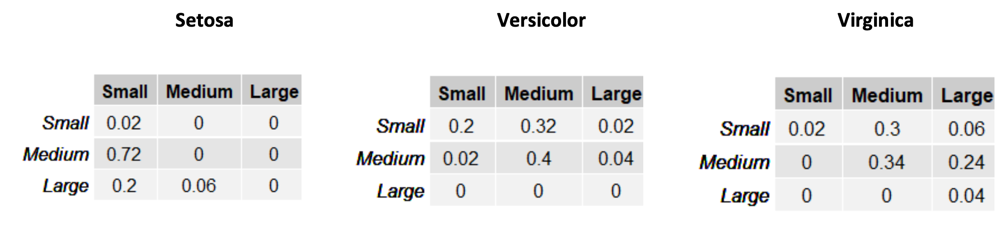

31. Generative Models for Classification#
As we have already discussed, discriminative models explicitly model the decision boundary. Probabilistic approaches do so by directly modeling the conditional probability distribution
This is for instance the case of a logistic regressor.
Generative models are another class of algorithms which do not explicitly model the conditional probability. Instead, they model the probability of the predictors independently for each class:
and then use the Bayes’ theorem to obtain the conditional probability and make predictions.
Differently from discriminative models, generative models make assumptions on the distribution of the data (e.g., data is often assumed to be Guassian) and hence are often less general than discriminative models. However, they can be advantageous when the training data is scarce. Also, while discriminative models such as the logistic regressor are unstable when data is linearly separable, generative approaches do not suffer from this limitation.
Generative models are so called because, by modeling the distribution of the data, they provide a complete data model which may also be used to generate new data following the joint probability distribution
even if they are mainly used to perform classification in this context.
31.1. Maximum A Posteriori (MAP) Classification Principle#
Generative classifiers use the Maximum A Posteriori (MAP) classification principle, which makes use of Bayes’ rule.
We will begin by considering the following stochastic event:
\(\mathbf{x}\) being of class \(c\)
Where \(\mathbf{x}\) is the input example and \(c \in \{ 0,\ldots,M - 1\}\) is one of the \(M\) possible classes in our classification problem.
Let us consider the following conditional probability:
This conditional probability answers to the question:
“What is the probability of observing class c, given an input example \(\mathbf{x}\)?”
If we can quantify such probability for every possible class \(c\), we have a conditional probability distribution over the classes, given the input data. For instance, if we have a classification problem over \(4\) classes, we have the following scheme:

The conditional probability distribution allows us to quantify how probable it is that the example at hand belongs to a given class. Hence, it is natural to classify \(\mathbf{x}\) as belonging to the class \(c’\) for which the probability \(P(c'|\mathbf{x})\) is maximum. This process of choosing the class which maximizes the probability is written as follows in mathematical terms:
In the example above, we would assign class 2 to the input example:

As previously noted, a MAP classifier can be defined as follows:
The Maximum A Posteriori classification rule offers a practical way to make decisions (i.e., classify elements), given probability estimates. However, we still need to understand how to estimate the probability \(\mathbf{P}\mathbf{(}\mathbf{C}\mathbf{|}\mathbf{X}\mathbf{)}\).
Unfortunately, computing such quantity using a frequentist approach is not easy when \(\mathbf{X}\) is a continuous variable. Indeed, to compute the distribution of classes given an example, we should be able to observe all possible classes which a given example can belong to. However, we usually have a single class associated to a given data point, which makes such computation difficult.
Using the Bayes’ theorem, we have:
Using this expression, we need to compute three quantities to obtain the hard-to-estimate \(P(C|X)\):
The likelihood \(P(X|C)\);
The prior \(P(C)\);
The evidence \(P(X)\).
We will now see how to compute each of these quantities.
31.1.1. The Prior \(P(C)\)#
\(P(C)\): this is the prior probability of a given class. If observing a class \(c\) is not very common, then \(P(c)\) will be small. We can use different approaches to estimate \(P(c)\):
We can estimate \(P(c)\) by considering the number of examples in the dataset. For instance, if our dataset contains \(800\) non-spam e-mails and \(200\) spam e-mails, we can assume that \(P(0) = 0.2\) and \(P(1) = 0.8\).
Alternatively, we could study what is the proportion of examples in each class in the real world. In the case of spam detection, we could ask a large sample of people how many e-mails they receive in average and how many spam e-mails they receive. These numbers can be used to define the prior probability.
Another common choice, when we don’t have enough information on the phenomenon is to assume that all classes are equally probable, in which case \(P(C) = \frac{1}{m}\), where \(m\) is the number of classes.
There are many ways to define the prior probability. However, it should be considered that this quantity should be interpreted in Bayesian terms. This means that, by specifying a prior probability, we are introducing our degree of belief on what classes are more or less likely in the system.
31.1.2. The Evidence \(P(X)\)#
If \(X\) is multi-dimensional, estimating \(P(X)\) can be complicated. However, if our goal is not to estimate \(P\left( C \middle| X \right)\), but only to determine the class \(c'\) which maximizes the posterior probability \(P(C = c'|X)\), we can note that we don’t need to estimate \(P(X)\).
Let us consider the MAP classification rule again:
Since \(P(\mathbf{x})\) is independent form the value of \(C\), the choice of the best class \(c\) does not depend on this term. Hence, we can say that \(P\left( C \middle| X \right)\) is proportional to the term in the numerator:
And hence:
31.1.3. The Likelihood \(P(X|C)\)#
While estimating the prior is easy and estimating the evidence is not necessary for classification purposes (it would be indeed necessary if we were to compute probabilities), computing the likelihood term is less straightforward.
If we have \(M\) different classes, a general approach to estimate the likelihood consists in group all observations belonging to a given class \(C=c\) (let’s call \(X_{c}\) the random variable of the examples belonging to this group) and estimate the probability \(P\left( X_{c} \right)\).
If we repeat this process for every possible value of \(C\), we have concretely estimated \(P(X|C)\) as:
To estimate \(P(X_{c})\) we will generally need to make a few assumptions. Depending on such assumptions, we obtain different generative models.
31.2. MAP Classification with Discrete Observations#
If \(X_{c}\) is discrete, we can estimate \(P(X_{c}\)) by counting how many times each of the values appear. For instance, if \(X_{c}\) is two-dimensional, we can build a 2D table to count co-occurrence of the values and estimate the probability in a frequentist way.
31.2.1. Example#
Let us consider a simplified version of the Fisher Iris classification problem in which we have two variables: SepalWidth and SepalLength with three levels each “Small”, “Medium” and “Large”. We can consider a 2D variable \(X = \lbrack SepalWidth,\ SepalLenght\rbrack\). The examples can belong to three different classes: setosa, versicolor, virginica. We can define the three likelihoods \(P\left( X_{setosa} \right)\), \(P(X_{versicolor})\), and \(P(X_{virginica})\) considering the following three tables:

In each of the tables, the rows are related to the SepalWidth variable, whereas the columns are related to the SepalLength variable. The tables contain absolute counts of the occurrences of specific values of the two variables. We can transform these tables into joint probability distributions by dividing each cell by the sum of the values in the table:

The tables above allow to estimate \(P\left( X \middle| C \right)\). For instance, we have:
\(P\left( SepalWidth = Medium,\ \ SepalLength = Small \middle| C = Setosa \right) = 0.72\);
\(P\left( SepalWidth = Small,\ \ SepalLength = Medium \middle| C = Versicolor \right) = 0.32\);
\(P\left( SepalWidth = Medium,\ \ SepalLength = Large \middle| C = Virginica \right) = 0.24\);
If we assign equal priors to the three species \(P(C) = \frac{1}{3}\), we can use the tables above to classify an example. For instance, let us consider an example with \(X = \lbrack Medium,\ Medium\rbrack\), i.e., \(SepalWidth = Medium\) and \(SepalLength = Medium\). To classify this input example, we will perform the following operation:
To do so we need to compute the following three values:
\(P\left( \lbrack Medium,Medium\rbrack \middle| Setosa \right)P(Setosa) = 0 \cdot \frac{1}{3} = 0\);
\(P\left( \lbrack Medium,Medium\rbrack \middle| Versicolor \right)P(Setosa) = 0.4 \cdot \frac{1}{3} = 0.13\);
\(P\left( \lbrack Medium,Medium\rbrack \middle| Virginica \right)P(Virginica) = 0.34 \cdot \frac{1}{3} = 0.11\);
We will hence classify the example as “Setosa”, as this maximizes the posterior probability.
31.3. Linear Discriminant Analysis (LDA)#
Linear Discriminant Analysis (LDA) is a generalization of Fisher’s Linear Discriminant (FLD) which makes additional assumptions on the data. As FLD, also LDA is closely related to PCA in that it finds a linear transformation of the data which better explains it (in the case of LDA the aim is to discriminate the different classes).
31.3.1. Linear Discriminant Analysis for D=1#
We will start by considering the case in which the data is uni-dimensional, hence \(D=1\). Recall that, since LDA is a generative algorithm, our goal is to estimate the terms:
for all classes \(k=1,\ldots,K\).
LDA makes the assumption that the observations will distribute in a Guassian way within each class. Hence, in the one-dimensional case, we will assume that:
where \(\mu_k\) and \(\sigma_k^2\) are the mean and variance of the observations in class \(k\).
LDA further assumes that data in each class have the same variance:
Using Bayes’ theorem, we can estimate the posterior probability as follows:
Where we let
and
By the MAP principle, we will assign \(x\) the class \(k\) maximizing the posterior probability \(P(C_k|x)\):
31.3.1.1. LDA and Mahalanobis Distance#
Since the logarithm is a monotonic function, maximizing \(P(C_k|x)\) is equivalent to maximizing \(\log P(C_k|x)\). Taking the logarithm of \(P(C_k|x)\), we obtain:
Where \(Cst.\) is a constant term arising from the normalization constant of the Gaussian distribution and from the denominator, which is considered a constant as it is independent of \(k\).
Note that the quantity
is the squared Mahalanobis distance. The Mahalanobis distance is defined as follows:
The Mahalanobis distance measures the distance between a point \(x\) and a Gaussian distribution with mean \(\mu\) and standard deviation \(\sigma\).
Indeed, we can see it as the number of standard deviations between \(x\) and \(\mu\). By normalizing by the standard deviation, the Mahalanobis distance allows to measure the distance between Gaussian distributions of different parameters, as illustrated in the figure below:

We can see how, even if the green dot is closer to the orange’s population mean, its distance from the blue population is smaller as this distribution is more dispersed.
This is coherent with the fact that the probability value of the green point under the blue population is larger than the probability value of the same point under the orange population.
Consider the case of uniform priors \(\pi_k = \frac{1}{K}, \forall k\). In this case, we can see LDA as classifying each point by assigning it to the class with the closest distribution in terms of Mahalanobis distance.
31.3.1.2. Linear Discriminant Analysis and Discriminant Function#
The reasoning above suggests that LDA acts as a discriminant function assigning observations to one class or another based on the computation of some scores based on the Mahalanobis distance.
We can see that LDA naturally defines a linear discriminant function, hence the words “linear” and “discriminant” in LDA. We can re-arrange the term \(\log P(C_k|x)\) as follows:
with
Where we set \(\delta_k(x)=\log P(C_k|x)\) as a shorthand notation.
From the expression above, it is clear that LDA defines a linear discriminant \(\delta_k\), hence LDA can be considered both a generative algorithm (explicitly modeling probabilities \(P(X_c)\)) and a discriminative one (explicitly modeling a decision boundary).
For instance, if \(K=2\) (two classes) and \(\pi_1=\pi_2\) (uniform priors), then the decision boundary is given by:
Note that this point would effectively act as a threshold (hence a decision boundary) to classify elements. This is also the point in which the two Guassian distribution intersect, as shown in the figure below:
When the priors are not uniform, the decision boundary will not be exactly at the intersection of the two Gaussian distributions, as shown in the figure below:
31.3.1.3. Optimization#
In practice, we can fit the LDA classifier to the data by estimating its parameters as follows:
where \(N_K\) is the number of observations in class \(C_k\), and \(N\) is the total number of elements. In practice, the first expression computes the means within each class and the second expression can be seen as a weighted average of the variances within each class.
The priors are estimated based on the number of elements in each class:
31.3.2. Linear Discriminant Analysis for D>1#
Let us now consider the general case in which \(D>1\). We will assume that our input observations are realizations of a random variable \(X=(X_1,X_2, \ldots, X_D)\) following a multivariate Gaussian distribution.
We will follow the same principle consider for the uni-dimensional case and model the likelihood terms \(P(X_c)\) with multivariate Gaussian distributions. Recall that the D-dimensional multivariate Gaussian is defined as follows:
Where \(\mathbf{\mu}\) is a D-dimensional vector indicating the mean, and \(\mathbf{\Sigma}\) is the \(D \times D\) covariance matrix.
In the multivariate case (\(D>1\)) LDA assumes that observations in class \(k\) follow a D-dimensional Gaussian distribution with mean \(\mathbf{\mu}_k\) and covariance matrix \(\mathbf{\Sigma}\). As in the previous case, we will assume that all classes have the same covariance matrix \(\mathbf{\Sigma}\), while means can be distinct. Hence, we will model:
We can estimate the posterior probability as follows:
31.3.2.1. Multidimensional Mahalanobis Distance#
Taking the logarithm of the posterior, we obtain:
This is the multivariate version of the expression seen in the unidimensional case (\(D=1\)). Note that the expression
is the generalization to multiple dimensions of the squared Mahalanobis distance. The Mahalanobis distance is indeed defined as follows in the multidimensional case:
In this case, the Mahalanobis distance estimates the distance between a multidimensional point \(\mathbf{x}\) and a multivariate Gaussian distribution. To do so, we need to take into account the covariance matrix of each distribution, which defines how the data vary along the different directions.
The plot below shows an example:
We can again see LDA as classifying \(\mathbf{x}\) with the class with the closest Gaussian distribution in terms of Mahalanobis distance.
31.3.2.2. Linear Discriminant Function#
Also in this case, LDA allows to define a multi-class linear discriminant functions:
where:
We can see \(\delta_k\) as a linear function of \(\mathbf{x}\). Note that the decision boundary will be made of all points \(\mathbf{x}\) such that
We will not see the mathematical formulation in details, but it is easy to see that will be linear functions as well. The following figure shows Gaussian fits and decision boundary for a simple example:

The parameters of the LDA classifier will be fit to the data with the following formulas:
31.3.3. LDA for Dimensionality Reduction#
Linear Discriminant Analysis can also be used for dimensionality reduction, similar to Fisher’s Linear Discriminant. We will not see the mathematical details, but LDA arrives at a similar solution as FLD with some technical differences. It is useful to know that libraries such as scikit-learn often implement both versions of LDA (classification and dimensionality reduction). More information can be found here: https://scikit-learn.org/stable/modules/lda_qda.html#mathematical-formulation-of-lda-dimensionality-reduction
31.4. Quadratic Discriminant Analysis (QDA)#
Quadratic Discriminant Analysis has a similar formulation to Linear Discriminant Analysis, but it removes the assumption that covariance matrices in the different classes should be the same, which was formulated as:
In this sense, LDA can be seen as a specific case of QDA.
We will not see the mathematical details, but, dropping this constraint makes the decision boundary between classes a quadratic function, rather than a linear one, hence the term “quadratic” in QDA.
The figure below compares LDA and QDA for classes with different covariance matrices:
31.5. Naïve Bayes Classifier#
Let us consider the problem of classifying e-mail messages as spam or non-spam, with the e-mails represented with bag of words (a representation which counts the number of occurrences of each word given a vocabulary), with vocabulary size equal to 20000 words. In this example, we will consider \(X = \lbrack X_{1},\ldots,X_{n}\rbrack\) (e.g., \(n = 20000)\) as a multi-dimensional random variable containing the features and \(C\) as the random variable representing the class.
If we want to apply the MAP rule, we obtain:
When the dimensionality of the input data is very high, modeling \(P(X|C)\) directly as seen before is very challenging.
For instance, if we wanted to fit a 20000-D Gaussian, we would have to compute \(Cov(X)\). This would be a matrix of dimension \(20000 \times 20000\), which would require about 1.5GB in single precision!
31.5.1. Naïve Assumption#
We have seen that probabilities can be factorized using the product rule. Hence, we could obtain:
However, this is not a very helpful factorization as the terms \(P(X_{i}|X_{1},\ldots,X_{i - 1},C)\) are conditioned also on other features, which makes them not easy to model.
We can make the naïve assumption that the input features are conditional independent given the class. That is, if the examples are represented by the multimodal random variable \(X = \lbrack X_{1},\ldots,X_{n}\rbrack\) (features) and \(C\) (class):
If \(X_{i}\) and \(X_{j}\) are word counts, then we are saying that if I take all non-spam e-mails, then the number of occurrences of a given word does not influence the number of occurrences of another word. This is obviously not true in general! For instance, there can be legitimate e-mails of different topics. If the e-mail is about a vacation, the words ‘trip’, ‘flight’, ‘luggage’ will appear often. Instead, if the e-mail is about work, the words ‘meeting’, ‘report’, ‘time’, will appear more often. This means that, within the same category (non-spam e-mails), the number of occurrences of a word (e.g., ‘trip’) may be related to the number of occurrences of another words (e.g., ‘flight’), which breaks the assumption of conditional independence. This is why this assumption is called naïve assumption. With this in mind, it should be considered that, despite such naïve assumption, the Naïve Bayes Classifier works surprisingly well in many contexts.
We know that:
Hence, we discover that, under the assumption of conditional independence:
So, we can re-write the MAP classification rule as:
The single \(P(X_{1}|C)\) terms are now easy to model, since \(X_{1}\) is mono-dimensional. In practice, depending on the considered problem, we can model these terms in different ways. Two common approaches, depending on the data, are to use a Gaussian distribution or a Multinomial distribution.
When we use Gaussian distributions to model the \(P(X_{i}|C)\) terms, the classification method is called “Gaussian Naïve Bayes). Similarly, if we consider a multinomial distribution, the classification method is called “Multinomial Naïve Bayes”.
31.5.2. Gaussian naïve Bayes#
Let us consider again our sex classification example based on height and weight. We will consider \(X = \lbrack H,W\rbrack\), which are random variables representing heights and weights of subjects. If we assume that the data is approximately Gaussian, the probabilities \(P(H|C)\) and \(P(W|C)\) can be modeled with univariate (1D) Gaussian distributions. This is done by first obtaining four samples:
\(H_{1}\): the heights of subjects when \(C = 1\);
\(W_{1}\): the weights of subjects when \(C = 1;\)
\(H_{0}\): the heights of subjects when \(C = 0\);
\(W_{0}\): the weights of subjects when \(C = 0.\)
We hence model each sample as a 1D Gaussian distribution by computing a mean and a variance value from each of these samples to obtain four Gaussian distributions:
\(P\left( H = h \middle| C = 0 \right) = N(x;\mu_{1},\sigma_{1})\);
\(P\left( W = w \middle| C = 0 \right) = N(x;\mu_{2},\sigma_{2})\);
\(P\left( H = h \middle| C = 1 \right) = N(x;\mu_{3},\sigma_{3})\);
\(P\left( W = w \middle| C = 1 \right) = N(x;\mu_{4},\sigma_{4})\);
After this, we can apply the classification rule:
The example \((h,w)\) is classified as class 1 if
\(P\left( h \middle| C = 1 \right)P\left( w \middle| C = 1 \right)P(C = 1) > P\left( h \middle| C = 0 \right)P\left( w \middle| C = 0 \right)P(C = 0)\);
The example \((h,w)\) is classified as class 0 otherwise.
We can exemplify this process as follows:

31.5.3. Naive Bayes and QDA#
We will not see it in details, but it can be shown that a Gaussian Naive Bayes classifier is equivalent to a Quadratic Discriminant Analysis classifier with diagonal covariance matrices. By forcing the covariance matrices to have zeros on all off-diagonal elements, we are assuming that variables are conditionally independent with respect to classes (hence independent within each class).
The figure below compares a Quadratic Discriminant Analysis classifier with a Gaussian Naive Bayes on the same data:
As we can see both decision boundaries are non-linear. This happens because we did not constrain all covariance matrices to be the equal.
Differently from QDA, in Gaussian Naive Bayes the fitted Gaussians are aligned to the axes, which is due to the naive assumption. This brings some differences in the decision boundary between class 1 and class 2 in the specific example above.
31.6. References#
Naïve Bayes Classifier: https://en.wikipedia.org/wiki/Naive_Bayes_classifier;
https://scikit-learn.org/stable/modules/lda_qda.html#lda-qda
Section 4.4 of [1]
[1] James, Gareth Gareth Michael. An introduction to statistical learning: with applications in Python, 2023.https://www.statlearning.com